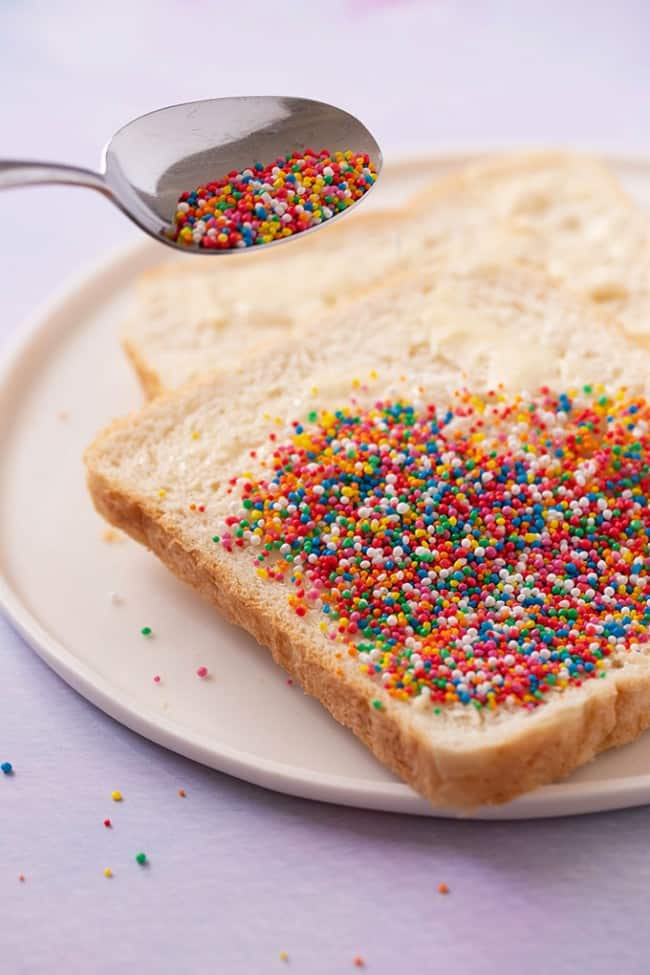

Fairy Bread
Return Home

Description
Indulge your inner child with this fantastic treat. Also a favourite at kids' parties.
Ingredients
- Store bought white sliced bread
- Spreadable butter (or margarine)
- 100s & 1000s sprinkles
Instructions
- Start by covering slices of white bread in lots and lots of spreadable butter. Be generous and spread the butter right to the edges (this is what the sprinkles will stick to).
- Carefully add 100's & 1000's sprinkles on top of the butter. I find it easiest to do this by spooning over the sprinkles using a dessert spoon.
- Finally, cut your bread slice into small triangles. Serve.